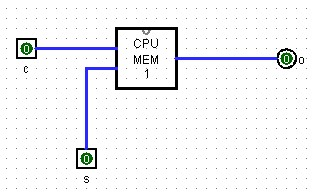
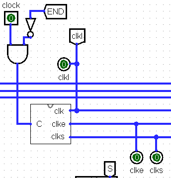
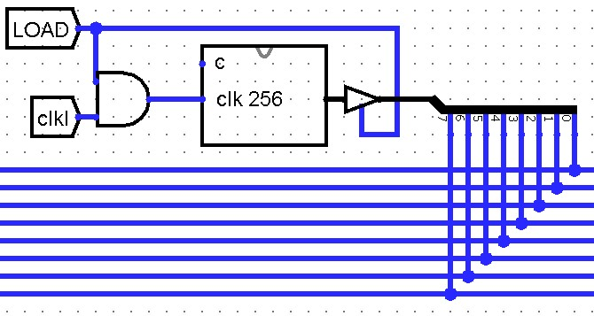
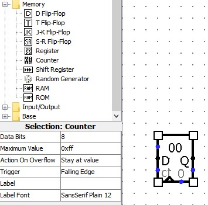
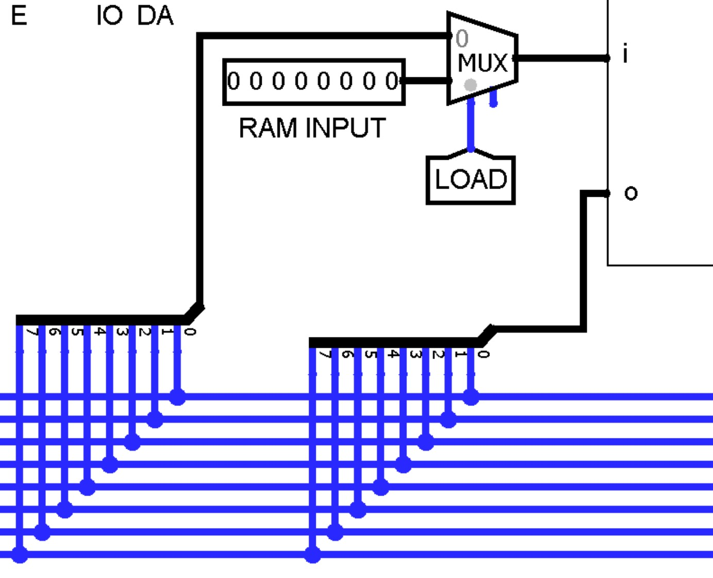

Carry, END and the Loader
Sections 14.9 – 14.12 | Estimated time: ~1 hour, with the video
14.9 The carry that comes back
Since Week 10 your ALU’s carry-in, ci, has been a pin you held at 0. The finished CPU feeds it from the C flag, so that an addition can include the carry out of the previous one — how an 8-bit machine adds 16-bit numbers — and a shift can bring a bit in from the last one.
It cannot be the C flag directly. At step 5 of an ALU instruction FLAGS is being set, so its C output is changing in the very transfer that would read it: the loop ACC exists to break, one bit wide. So the flag is copied a step earlier into a one-bit latch, CTMP, set at the same moment as TMP (step 4), while FLAGS holds still:
CTMP= oneMEM_1BIT: input FLAGS C, settmp_s.- ALU
ci= CTMP ANDc, a new control line,c=step5AND ALU.

Because c is high only at step 5 of an ALU instruction, every other addition — fetch’s PC + 1, DATA and the conditional jump’s PC + 1, and CLF’s 0 + 1 — still adds with a carry-in of 0. Only ADD, SHR and SHL ever read ci. The price is that an ADD or shift picks up whatever carry the last ALU instruction left, which is why MYSIM.txt runs CLF before each one that must start clean.
14.10 END, and the final clock
END is the byte 11001111 — the byte that would otherwise be AND R3, R3. The control unit detects it with one gate: an AND of the IR’s eight bits, with b5 and b4 inverted. Its output, end, goes back to the clock.
Until now you clicked clk_in 24 times per instruction. MYSIM.txt runs 77 instructions — about 1,850 clicks — so the finished CPU replaces the clicks with Logisim’s Clock component (Wiring folder) and lets Logisim tick it. The CPU tab’s clock input becomes:
CLOCK’s clk_in = clock AND NOT end |

Simulate → Tick Once (Ctrl-T) is now one click. Simulate → Ticks Enabled (Ctrl-K) runs at the speed set under Tick Frequency, until END stops it. The CPU stops in the middle of fetching END, with END in the IR and the PC still holding END’s address.
Your Week 13 run pin retires here. The loader needs the stepper to hold still however long the clock runs, and in the finished CPU that is LOAD’s job, inside the control unit: the stepper’s clock becomes clk AND NOT LOAD, and step 1 becomes step1 AND NOT LOAD, so while LOAD is on the stepper is frozen and step 1 raises nothing. Delete run and its three AND gates on the CPU tab; page 5 shows the whole control unit.
14.11 The loader: three built-ins, by exception
Your RAM has 32 bytes and no file input. Typing MYSIM.txt in by hand is 23 bytes, 46 pulses — and every test program after it the same. Your instructor’s finished CPU loads a program the way a real computer boots: a counter walks the addresses, and at each one a byte is copied from somewhere that can read a file. Three parts do it, and all three are Logisim built-ins you are otherwise not allowed to use:
| Built-in | Folder | Allowed only | Job |
|---|---|---|---|
| Counter | Memory | inside a tab called COUNTER_256 | walks 0 to 255 and stays there |
| RAM | Memory | on CPU_TEST, as the external RAM | holds the program file (Edit Contents → Open) |
| Multiplexor | Plexers | at your RAM’s input, selected by load | feeds your RAM from the file instead of the bus |
Why the exception is fair: none of them is part of the computer. They are a test harness — the equivalent of the boot loader and the disk. Your CPU’s registers, ALU, RAM and control unit are still entirely yours, and nothing your CPU computes passes through a built-in.

COUNTER_256 clocked by clkl AND load, driving the bus through a buffer that only load opens.

i: a Multiplexor, select = load. Input 0 is the bus; input 1 is ram_input, from the external RAM.While load is 1, each turn of the clock does one byte: the counter puts address k on the bus, the MAR follows it (the control unit’s MAR_S is ORed with a new input, MARS, which you hold at 1), and in the set quarter the control unit’s RAM_S = … OR (LOAD AND clk_s) raises your RAM’s s, writing byte k of the file. The counter moves on when clk falls, in a quarter when nothing is being written. On CPU_TEST a second COUNTER_256, clocked by clkl, gives the external RAM the same address.
![Your instructor's top-level CPU_TEST circuit. Along the top, eight pairs of hex digit displays labelled BUS, ACC, PC, IR, R0, R1, R2 and R3. In the middle, a large block labelled CPU with pins around it: PC, END, BUS OUTPUT, CLK, CLKL and RAM INPUT on the left; LOAD, RESET, R0 to R3, IR and ACC on the right; MARS, IO pins, CLKE and CLKS along the bottom. To the right, inputs LOAD, a RESET button and MARS, an END LED, and CLKL, CLKE, CLKS readouts showing 0, 1, 0 above a clock component. Below, the external RAM with its clk 256 counter.](images/CPU_TopSim.jpg)
CPU_TEST: hex displays across the top, the CPU in the middle, LOAD, RESET and MARS beside it, the clock, and the external RAM below. His I/O pins are optional in yours (page 5).14.12 Load and run
The procedure, in your instructor’s order. Every step matters; the ones people skip are marked.
- Simulate → Reset. Both counters are now 0, and the stepper is on step 1.
- LOAD = 1, before any tick. The stepper freezes and step 1 goes quiet. A tick with LOAD off moves the stepper and the external RAM’s counter but not the CPU’s, and every byte lands one address late.
- Press RESET, and check the hex displays all read
00: R0–R3, TMP, ACC, FLAGS, the PC and the IR are 0, and your RAM is cleared. MYSIM needs this: itsXOR R2, R2clears R2 only if R2 already holds a value. - Right-click the external RAM → Edit Contents → Open your program (or type its bytes), and close the editor.
- MARS = 1.
- Ticks Enabled until the bus reads
FF; then turn ticks off. Check your RAM’s bytes (right-click → View). - Tick Once until
clkl= 0,clk_e= 1,clk_s= 0 (clklis the clock’sclk). Start in any other quarter and step 1’s set quarter can be skipped, so the first fetch reads the wrong byte. - MARS = 0, then LOAD = 0.
- Ticks Enabled. The program runs until END lights; then turn ticks off and read the registers.
Watch it: loading and running MYSIM.txt
Your instructor loads and runs the finished simulator, from “turn LOAD on and reset” to R2 = 19 in hex. About ten minutes; recorded in 2022.
Transcript: loading and running
Loading transcript…
- Nothing in the circuit. Your finished CPU is his design: LOAD, MARS and RESET go into the control unit, every bus-facing pin is pulled down, and RESET writes 0 everywhere — hence “check the hex outputs are all zeros” and replacing a RAM byte that shows an X (01:35).
- “Set our MARS” (03:24) is the MARS pin — memory address register set — not the MIPS simulator.
- The 0, 1, 0 check of step 7 above is not shown; his top-level page asks for it.
For how real computers start up from storage, log into your Saylor CS301 account at the CS301 course page; its units on memory and input/output describe the same idea at full size.
Where you are
Your CPU can load a file, run it, and stop. Next page: proving it does the right thing, one class of instruction at a time.